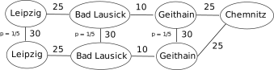

2. Beyond DQN¶
Slides: pdf
2.1. Distributional learning : Categorical DQN¶
2.1.1. Why learning distributions of returns?¶
Until now, we have only cared about the expectation of the returns, i.e. their mean value:
We select actions with the highest expected return, which makes sense on the long term.
Suppose we have two actions \(a_1\) and \(a_2\), which provide different returns with the same probability:
\(R(a_1) = \{100, 200\}\)
\(R(a_2) = \{-100, 400\}\)
Their Q-value is the same: \(Q(a_1) = Q(a_2) = 150\), so if you play them an infinity of times, they are both optimal. But suppose that, after learning, you can only try a single action. Which one do you chose? RL does not distinguish safe from risky actions.
Example

The trip by train from Leipzig to Chemnitz takes 1 hour if everything goes well. Once a week on average, the train will get stuck on the way for 30 minutes. The expected duration of the trip is 1h + 1/5*30 = 1h06. But in practice it takes either 1h or 1h30, never 1h06. If driving by car always takes 1h15, it might be worth it if you have an urgent appointment that day.
2.1.2. Categorical learning¶
The idea of distributional RL is to learn the distribution of returns \(\mathcal{Z}^\pi\) directly instead of its expectation:

Fig. 2.34 Distribution of returns for a given state.¶
Note that we can always obtain the Q-values back:
In categorical DQN [Bellemare et al., 2017], they model the distribution of returns as a discrete probability distribution: the categorical or multinouilli distribution. One first needs to identify the minimum and maximum returns \(R_\text{min}\) and \(R_\text{max}\) possible in the problem. One then splits the range \([R_\text{min}, R_\text{max}]\) in \(n\) discrete bins centered on the atoms \(\{z_i\}_{i=1}^N\).
The probability that the return obtained the action \((s, a)\) lies in the bin of the atom \(z_i\) is noted \(p_i(s, a)\). It can be approximated by a neural network \(F\) with parameters \(\theta\), using a softmax output layer:
The \(n\) probabilities \(\{p_i(s, a; \theta)\}_{i=1}^N\) completely define the parameterized distribution \(\mathcal{Z}_\theta(s, a)\).
where \(\delta_{z_i}\)is a Dirac distribution centered on the atom \(z_i\). The Q-value of an action can be obtained by:
{kind=link}
Fig. 2.35 Categorical DQN outputs the distribution of returns for each action using a softmax output layer. Source: https://physai.sciencesconf.org/data/pages/distributional_RL_Remi_Munos.pdf¶
The only thing we need is a neural network \(\theta\) returning for each action \(a\) in the state \(s\) a discrete probability distribution \(\mathcal{Z}_\theta(s, a)\) instead of a single Q-value \(Q_\theta(s, a)\). The NN uses a softmax activation function for each action. Action selection is similar to DQN: we first compute the \(Q_\theta(s, a)\) and apply greedy / \(\epsilon\)-greedy / softmax over the actions.
The number \(n\) of atoms for each action should be big enough to represent the range of returns. A number that works well with Atari games is \(n=51\): Categorical DQN is often noted C51.
2.1.3. Distributional Bellman target¶
How do we learn the distribution of returns \(\mathcal{Z}_\theta(s, a)\) of parameters \(\{p_i(s, a; \theta)\}_{i=1}^N\)? In Q-learning, we minimize the mse between the prediction \(Q_\theta(s, a)\) and the target:
where \(\mathcal{T}\) is the Bellman operator.
We do the same here: we apply the Bellman operator on the distribution \(\mathcal{Z}_\theta(s, a)\).
We then minimize the statistical “distance” between the distributions \(\mathcal{Z}_\theta(s, a)\) and \(\mathcal{T} \, \mathcal{Z}_\theta(s, a)\).
Let’s note \(P^\pi \, \mathcal{Z}\) the return distribution of the greedy action in the next state \(\mathcal{Z}_\theta(s', a')\).
Multiplying the returns by the discount factor \(\gamma < 1\) shrinks the return distribution (its support gets smaller). The atoms \(z_i\) of \(\mathcal{Z}_\theta(s', a')\) now have the position \(\gamma \, z_i\), but the probabilities stay the same.
{kind=link}
Fig. 2.36 Multiplying the returns by \(\gamma < 1\) shrinks the supports of the distribution. Source: https://physai.sciencesconf.org/data/pages/distributional_RL_Remi_Munos.pdf¶
Adding a reward \(r\) translates the distribution. The probabilities do not change, but the new position of the atoms is:

Fig. 2.37 Adding the reward translates the distribution. Source: https://physai.sciencesconf.org/data/pages/distributional_RL_Remi_Munos.pdf¶
But now we have a problem: the atoms \(z'_i\) of \(\mathcal{T} \, \mathcal{Z}_\theta(s, a)\) do not match with the atoms \(z_i\) of \(\mathcal{Z}_\theta(s, a)\). We need to interpolate the target distribution to compare it with the predicted distribution.
We need to apply a projection \(\Phi\) so that the bins of \(\mathcal{T} \, \mathcal{Z}_\theta(s, a)\) are the same as the ones of \(\mathcal{Z}_\theta(s, a)\). The formula sounds complicated, but it is basically a linear interpolation:

Fig. 2.38 The Bellman target distribution \(\mathcal{T} \, \mathcal{Z}_\theta(s, a)\) must be projected to match the support of \(\mathcal{Z}_\theta(s, a)\). Source: https://physai.sciencesconf.org/data/pages/distributional_RL_Remi_Munos.pdf¶
We now have two distributions \(\mathcal{Z}_\theta(s, a)\) and \(\Phi \, \mathcal{T} \, \mathcal{Z}_\theta(s, a)\) sharing the same support. We now want to have the prediction \(\mathcal{Z}_\theta(s, a)\) close from the target \(\Phi \, \mathcal{T} \, \mathcal{Z}_\theta(s, a)\). These are probability distributions, not numbers, so we cannot use the mse. We instead minimize the Kullback-Leibler (KL) divergence between the two distributions.
Kullback-Leibler (KL) divergence
Let’s consider a parameterized discrete distribution \(X_\theta\) and a discrete target distribution \(T\). The KL divergence between the two distributions is:
It can be rewritten as the sum of the cross-entropy and the entropy of \(T\):
As \(T\) does not depend on \(\theta\), the gradient of the KL divergence w.r.t to \(\theta\) is the same as the gradient of the cross-entropy.
Minimizing the KL divergence is the same as minimizing the cross-entropy. Neural networks with a softmax output layer and the cross-entropy loss function can do that.
2.1.4. Categorical DQN¶
The categorical DQN algorithm follows the main lines of DQN, with the additional step of prohecting the distributions:
Categorical DQN
Initialize distributional value network \(Z_{\theta}\) and target network \(Z_{\theta'}\).
Initialize experience replay memory \(\mathcal{D}\) of maximal size \(N\).
for \(t \in [0, T_\text{total}]\):
Select an action \(a_t\) based on \(Q_\theta(s_t, a)\), observe \(s_{t+1}\) and \(r_{t+1}\).
Store \((s_t, a_t, r_{t+1}, s_{t+1})\) in the experience replay memory.
Every \(T_\text{train}\) steps:
Sample a minibatch \(\mathcal{D}_s\) randomly from \(\mathcal{D}\).
For each transition \((s_k, a_k, r_k, s'_k)\) in the minibatch:
Select the greedy action in the next state using the target network:
\[a'_k = \text{argmax}_a \, Q_{\theta'}(s'_k, a) = \text{argmax}_a \, \mathbb{E}[Z_{\theta'}(s'_k, a)]\]Apply the Bellman operator on the distribution of the next greedy action:
\[TZ_k = r_k + \gamma \, Z_{\theta'}(s'_k, a'_k)\]Project this distribution to the support of \(Z_\theta(s_k, a_k)\).
\[\mathbf{t}_k = \text{Projection}(TZ_k, Z_\theta(s_k, a_k))\]Update the value network \(Q_{\theta}\) on \(\mathcal{D}_s\) to minimize the cross-entropy:
\[\mathcal{L}(\theta) = \mathbb{E}_{\mathcal{D}_s}[ - \mathbf{t}_k \, \log Z_\theta(s_k, a_k)]\]
In practice, the computation of the cross-entropy loss is described in [Bellemare et al., 2017]:

Fig. 2.39 Computation of the cross-entropy loss in [Bellemare et al., 2017].¶
Having the full distribution of returns allow to deal with uncertainty. For certain actions in critical states, one could get a high return (killing an enemy) or no return (death). The distribution reflects that the agent is not certain of the goodness of the action. Expectations would not provide this information.

Fig. 2.40 The distribution of returns for each action allows to estimate the uncertainty. Source: https://deepmind.com/blog/article/going-beyond-average-reinforcement-learning¶
{kind=link}
Fig. 2.41 C51 outperforms both DQN and humans on Atari games. Source [Bellemare et al., 2017].¶

Fig. 2.42 C51 outperforms double DQN on most games. Source [Bellemare et al., 2017].¶
Other variants of distributional learning include:
QR-DQN Distributional Reinforcement Learning with Quantile Regression [Dabney et al., 2017].
IQN Implicit Quantile Networks for Distributional Reinforcement Learning [Dabney et al., 2018].
The Reactor: A fast and sample-efficient Actor-Critic agent for Reinforcement Learning [Gruslys et al., 2017].
2.2. Noisy DQN¶
DQN and its variants rely on \(\epsilon\)-greedy action selection over the Q-values to explore. The exploration parameter \(\epsilon\) is annealed during training to reach a final minimal value. It is preferred to softmax action selection, where \(\tau\) scales with the unknown Q-values. The problem is that it is a global exploration mechanism: well-learned states do not need as much exploration as poorly explored ones.
{kind=link}
Fig. 2.43 The exploration parameter \(\epsilon\) or \(\tau\) is annealed during learning to solve the exploration/exploitation trade-off. Source: https://www.researchgate.net/publication/334741451/figure/fig2/AS:786038515589120@1564417594220/Epsilon-greedy-method-At-each-step-a-random-number-is-generated-by-the-model-If-the_W640.jpg¶
{kind=link}
\(\epsilon\)-greedy and softmax add exploratory noise to the output of DQN: The Q-values predict a greedy action, but another action is taken. What about adding noise to the parameters (weights and biases) of the DQN, what would change the greedy action everytime? Controlling the level of noise inside the neural network indirectly controls the exploration level.

Fig. 2.44 Instead of adding noise to the output (greedy action), we could add noise to the parameters of the neural network. Source: https://openai.com/blog/better-exploration-with-parameter-noise/¶
Note
A very similar idea was proposed by OpenAI at the same ICLR conference: [Plappert et al., 2018]
Parameter noise builds on the idea of Bayesian deep learning. Instead of learning a single value of the parameters:
we learn the distribution of the parameters, for example by assuming they come from a normal distribution:
For each new input, we sample a value for the parameter:
with \(\epsilon \sim \mathcal{N}(0, 1)\) a random variable. The prediction \(y\) will vary for the same input depending on the variances:
The mean and variance of each parameter can be learned through backpropagation!

Fig. 2.45 Bayesian deep learning learns a distribution of weights. Source: https://ericmjl.github.io/bayesian-deep-learning-demystified¶
As the random variables \(\epsilon_i \sim \mathcal{N}(0, 1)\) are not correlated with anything, the variances \(\sigma_\theta^2\) should decay to 0. The variances \(\sigma_\theta^2\) represent the uncertainty about the prediction \(y\).
Applied to DQN, this means that a state which has not been visited very often will have a high uncertainty: The predicted Q-values will change a lot between two evaluations, so the greedy action might change: exploration. Conversely, a well-explored state will have a low uncertainty: The greedy action stays the same: exploitation.
Noisy DQN [Fortunato et al., 2017] uses greedy action selection over noisy Q-values. The level of exploration is learned by the network on a per-state basis. No need for scheduling! Parameter noise improves the performance of \(\epsilon\)-greedy-based methods, including DQN, dueling DQN, A3C, DDPG (see later), etc.
{kind=link}
Fig. 2.46 Noisy networks outperform their \(\epsilon\)-soft variants. Source: [Fortunato et al., 2017].¶
2.3. Rainbow network¶
We have seen various improvements over a few years (2013-2017):
Original DQN [Mnih et al., 2013]
Double DQN [van Hasselt et al., 2015]
Prioritized Experience Replay [Schaul et al., 2015]
Dueling DQN [Wang et al., 2016]
Categorical DQN [Bellemare et al., 2017]
NoisyNet [Fortunato et al., 2017]
Which of these improvements should we use?
{kind=link}
Fig. 2.47 The Rainbow network combines all DQN improvements and outperforms each of them. Source: [Hessel et al., 2017].¶
Answer: all of them. The rainbow network [Hessel et al., 2017] combines :
double dueling DQN with PER.
categorical learning of return distributions.
parameter noise for exploration.
n-step return (n=3) for the bias/variance trade-off:
and outperforms any of the single improvements.

Fig. 2.48 Ablation studies on the Rainbow network. Source: [Hessel et al., 2017].¶
Most of these mechanisms are necessary to achieve optimal performance (ablation studies). n-step returns, PER and distributional learning are the most critical. Interestingly, double Q-learning does not have a huge effect on the Rainbow network: The other mechanisms (especially distributional learning) already ensure that Q-values are not over-estimated.
You can find good implementations of Rainbow DQN on all major frameworks, for example on rllib:
https://docs.ray.io/en/latest/rllib-algorithms.html#deep-q-networks-dqn-rainbow-parametric-dqn
2.4. Distributed learning¶
2.4.1. Gorila - General Reinforcement Learning Architecture¶
The DQN value network \(Q_\theta(s, a)\) has two jobs:
actor: it interacts with the environment to sample \((s, a, r, s')\) transitions.
learner: it learns from minibatches out of the replay memory.

Fig. 2.49 The DQN value network is both an actor and a learner, as it needs to sequentially select actions and learn from the replay memory. Source: [Nair et al., 2015].¶
The weights of the value network lie on the same CPU/GPU, so the two jobs have to be done sequentially: computational bottleneck. DQN cannot benefit from parallel computing: multi-core CPU, clusters of CPU/GPU, etc.
The Gorila framework [Nair et al., 2015] splits DQN into multiple actors and multiple learners. Each actor (or worker) interacts with its copy of the environment and stores transitions in a distributed replay buffer. Each learner samples minibatches from the replay buffer and computes gradients w.r.t the DQN loss. The parameter server (master network) applies the gradients on the parameters and frequently synchronizes the actors and learners.

Fig. 2.50 The Gorila framework uses multiple actors to collect transitions and store them in the ERM. The learners sample the ERM and compute the gradients of the DQN loss function. The parameter servers collect the gradients and synchronize the parameters of the actors and learners. Source: [Nair et al., 2015].¶
Gorila allows to train DQN on parallel hardware (e.g. clusters of GPU) as long as the environment can be copied (simulation).
{kind=link}
Fig. 2.51 The Gorila framework allows to slightly improve the performance of DQN on Atari games… Source: [Nair et al., 2015].¶
The final performance is not incredibly better than single-GPU DQN, but obtained much faster in wall-clock time (2 days instead of 12-14 days on a single GPU).
{kind=link}
Fig. 2.52 … but that performance is achieved in a much smaller wall-clock time. Source: [Nair et al., 2015].¶
2.4.2. Ape-X¶
With more experience, Deepmind realized that a single learner is better. Distributed SGD (computing gradients with different learners) is not very efficient. What matters is collecting transitions very quickly (multiple workers) but using prioritized experience replay to learn from the most interesting ones.

Using 360 workers (1 per CPU core), Ape-X [Horgan et al., 2018] reaches super-human performance for a fraction of the wall-clock training time.

The multiple parallel workers can collect much more frames, leading to the better performance. The learner uses n-step returns and the double dueling DQN network architecture, so it is not much different from Rainbow DQN internally.

2.5. Recurrent DQN¶
2.5.1. DRQN: Deep Recurrent Q-network¶
Atari games are POMDP: each frame is a partial observation, not a Markov state. One cannot infer the velocity of the ball from a single frame.
{kind=link}
Fig. 2.53 Most Atari games have frames which do not respect the Markov property. Source: [Hausknecht & Stone, 2015].¶
The trick used by DQN and its variants is to stack the last four frames and provide them as inputs to the CNN. The last 4 frames have (almost) the Markov property.
The alternative is to use a recurrent neural network (e.g. LSTM) to encode the history of single frames.
The output at time \(t\) depends on the whole history of inputs \((\mathbf{x}_0, \mathbf{x}_1, \ldots, \mathbf{x}_t)\).
Using the output of a LSTM as a state, we make sure that we have the Markov property, RL will work:

Fig. 2.54 Value-based network with a LSTM layer before the Q-value output layer. Source: https://blog.acolyer.org/2016/11/23/playing-fps-games-with-deep-reinforcement-learning/¶
For the neural network, it is just a matter of adding a LSTM layer before the output layer. The convolutional layers are feature extractors for the LSTM layer. The loss function does not change: backpropagation (through time) all along.

Fig. 2.55 DRQN architecture [Hausknecht & Stone, 2015].¶
The only problem is that RNNs are trained using truncated backpropagation through time (BPTT). One needs to provide a partial history of \(T = 10\) inputs to the network in order to learn one output:
The experience replay memory should therefore not contain single transitions \((s_t, a_t, r_{t+1}, s_{t+1})\), but a partial history of transitions.
Using a LSTM layer helps on certain games, where temporal dependencies are longer that 4 frames, but impairs on others.

Fig. 2.56 DRQN performance compared to DQN [Hausknecht & Stone, 2015].¶
Beware: LSTMs are extremely slow to train (but not to use). Stacking frames is still a reasonable option in many cases.

Fig. 2.57 Training and inference times of DRQN compared to DQN [Hausknecht & Stone, 2015].¶
2.5.2. R2D2: Recurrent Replay Distributed DQN¶
R2D2 [Kapturowski et al., 2019] builds on Ape-X and DRQN:
double dueling DQN with n-step returns (n=5) and prioritized experience replay.
256 actors, 1 learner.
1 LSTM layer after the convolutional stack.
In addition to solving practical problems with LSTMs (initial state at the beginning of an episode), it became the state of the art on Atari-57 until November 2019…